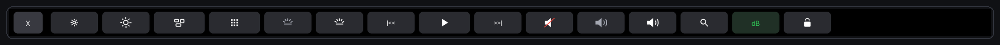
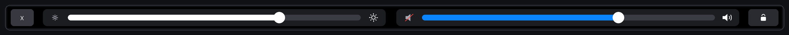
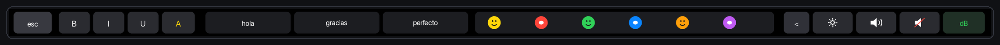
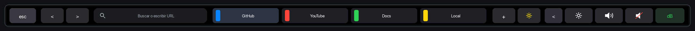
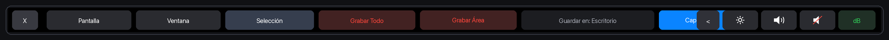
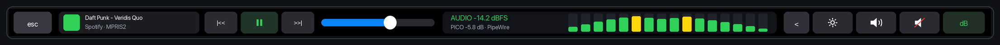
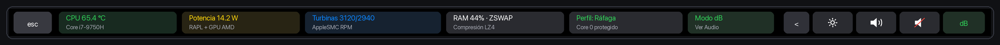
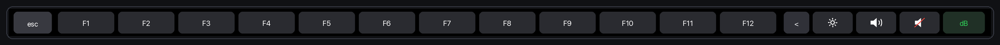

TuxBar Pro — Touch Bar Completo para Linux T2
Todas las vistas e íconos vectoriales del Touch Bar de macOS llevados a Linux (Ubuntu 24.04 LTS / kernel linux-t2) junto con reproductores MPRIS2, medidor de decibeles (dBFS) en PipeWire y telemetría térmica A2141.
Las 8 vistas incluidas en el Touch Bar (2170 × 60)
1. Control Strip Expandido estilo macOS

2. Deslizadores Táctiles de Brillo y Volumen

3. Barra de Escritura: Formato, Texto Predictivo y Emojis

4. Barra de Navegador con Miniaturas de Pestañas

5. Barra de Captura y Grabación de Pantalla

6. Reproductor MPRIS2 + Medidor de Decibeles (dBFS) PipeWire

7. Telemetría Térmica y Turbinas A2141 en Vivo

8. Teclas de Función Clásicas (Esc + F1–F12)

Instalación en Ubuntu 24.04 LTS / Linux T2
git clone https://github.com/mylnzon58/tuxbar-pro.git
cd tuxbar-pro
chmod +x install.sh uninstall.sh
sudo ./install.sh